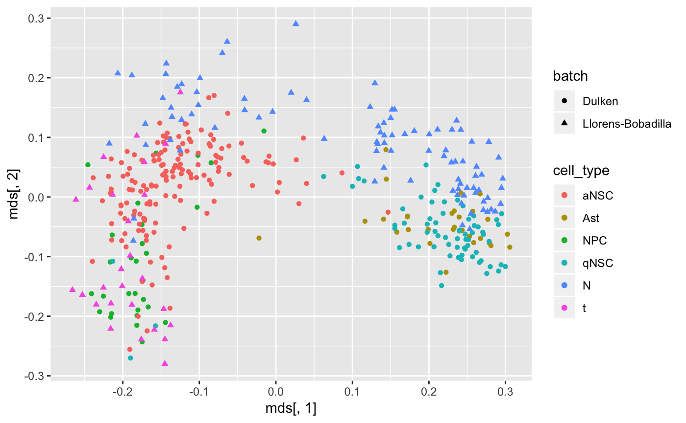

neurogenesis.RmdIn this vignette, we the semi-supervised version of corgi applied to the neurogenesis in SVZ datasets
Load data from Llorens-Bobadilla. This code is obtained from the GitHub code for Figure 6B in Dulken et al 2017
Llorens_allcounts<-read.table(url("https://github.com/bdulken/SVZ_NSC_Dulken_2/raw/master/Files/Llorens_counts_allgenes.txt"))
allcounts_allcells<-Llorens_allcounts
#Remove neuroblasts from Llorenss data
#allcounts_allcells_notaps<-allcounts_allcells[!grepl("tap",colnames(allcounts_allcells))]
allcounts_allcells_noblasts<-allcounts_allcells[!grepl("PSA",colnames(allcounts_allcells))]
#Remove oligodendrocytes from Llorenss data
oligos<-as.vector(read.table(url("https://raw.githubusercontent.com/bdulken/SVZ_NSC_Dulken_2/master/Files/comp_oligos.txt"))[,1])
allcounts_allcells_noblasts_nooligo<-allcounts_allcells_noblasts[,-na.omit(match(oligos,colnames(allcounts_allcells_noblasts)))]
allcounts_allcells_noblasts_nooligo_noERCC<-allcounts_allcells_noblasts_nooligo[!grepl("ERCC-",rownames(allcounts_allcells_noblasts_nooligo)),]
llorens <- allcounts_allcells_noblasts_nooligo_noERCC
llorens_cell_type <- factor(
unlist(
lapply(X = colnames(llorens),
FUN = function(x){substr(x,1,1)})
)
)This code is adapted obtained from the GitHub code for Figure 1 in Dulken et al 2017
The difference is we don’t filter genes by cell-cycle.
#Loading all high quality cells and filtering for lowly expressed genes
spec_pops<-read.table(url("https://raw.githubusercontent.com/bdulken/SVZ_NSC_Dulken_2/master/Files/AllCounts_specPops_read_gene_ERCC_filt_FINAL.txt"))
allcounts_allcells<-spec_pops
#Removing Oligodendrocytes and Outliers
oligos<-as.vector(read.table(url("https://raw.githubusercontent.com/bdulken/SVZ_NSC_Dulken_2/master/Files/STAR_oligos_updated_09232015.txt"))[,1])
allcounts_allcells_nooligo<-allcounts_allcells[,-na.omit(match(oligos,colnames(allcounts_allcells)))]
#Filtering for expressed by 5 cells at 10 counts
greaterthan0<-allcounts_allcells_nooligo>10
greaterthan0sum<-rowSums(greaterthan0)
allcounts_allcells_nooligo_genefilt<-allcounts_allcells_nooligo[greaterthan0sum>=5,]
dulken <- allcounts_allcells_nooligo_genefilt
dulken_cell_type <-
factor(
unlist(
lapply(X=colnames(dulken),
FUN=function(x){strsplit(x,split = "_",fixed=T)[[1]][1]})
)
)
shared_genes <- intersect(rownames(dulken),rownames(llorens))
length(shared_genes)
#> [1] 8357
dulken <- dulken[shared_genes,]
llorens <- llorens[shared_genes,]
comb <- cbind(dulken,llorens)
cell_type <- forcats::fct_c(dulken_cell_type,llorens_cell_type)
batch <- c(rep("Dulken",ncol(dulken)),rep("Llorens-Bobadilla",ncol(llorens)))library(corgi)
library(ggplot2)
data("gs_neurogenesis")
corgi_gene_set <- gs_neurogenesis[[3]]
length(corgi_gene_set)
#> [1] 106
D <- (1-cor(comb[corgi_gene_set,],method = "spearman"))/2
mds <- cmdscale(D,k=2)
qplot(mds[,1],mds[,2],color = cell_type,shape = batch)